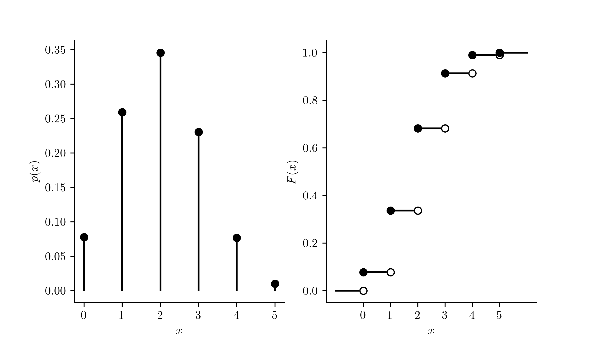

Here we introduce a very simple statistical experiment (maybe the simplest one imaginable) called a Bernoulli trial, after the man Jakob Bernoulli (1655–1705), soft “J”. We can use this simple experiment to build more interesting experiments, one of which will give rise to a probability distribution called the Binomial distribution.
9.1 The Bernoulli distribution
The Bernoulli distribution arises from the Bernoulli trial:
Definition 9.1 (Bernoulli trial) A Bernoulli trial is a statistical experiment for which there are two possible outcomes. We often give the outcomes the names “success” and “failure” and denote by \(p\) the probability of a “success.”
It is quite easy to think of examples.
Example 9.1 (Freethrow) Shoot a freethrow and call making a basket a “success”, missing a “failure”. What is your probability of success \(p\)?
Example 9.2 (Flip a coin) Flip a coin and call heads a success, tails a failure. If the coin is fair then \(p = 1/2\).
We often encode the outcome of a Bernoulli trial in a random variable equal to \(1\) for a success and \(0\) for a failure. The probability distribution of a random variable defined in this way is called the Bernoulli distribution.
Definition 9.2 (Bernoulli distribution) Let \(X\) be a random variable with support \(\mathcal{X}= \{0,1\}\), taking the value \(1\) with probability \(p\) and the value \(0\) with probability \(1-p\). Then we say \(X\) has the Bernoulli distribution with success probability \(p\).
We have just met our first probability distribution with a name—the Bernoulli distribution. If a random variable has a distribution with a name, statisticians like to express it writing “\(X \sim\)” followed by either a shorthand notation or a symbol for the distribution. If \(X\) has the Bernoulli distribution with success probability \(p\), we will express this by writing \[
X \sim \text{Bernoulli}(p).
\] Note that we may also refer to \(X\) as a Bernoulli random variable.
Recall that the probability mass function (PMF) of a discrete random variable is the function \(p(\cdot)\) such that \(P(X = x) = p(x)\) for all \(x \in \mathcal{X}\). That is, \(p(x)\) returns the probability that the random variable \(X\) takes the value \(x\) when observed. Note that we can write the PMF of a random variable \(X\) with the \(\text{Bernoulli}(p)\) distribution as \[
p(x) = p^x(1-p)^{1-x}.
\tag{9.1}\]
Example 9.3 (Alarm fail) Suppose you wake up on time with probability \(0.90\) and fail to wake up on time with probability \(0.10\). Letting \(X = 1\) if you wake up on time and \(X=0\) otherwise, we may write \(X \sim \text{Bernoulli}(0.90)\). Moreover \(X\) has pmf \(p(x) = (0.90)^x(1 - 0.90)^{1-x}\), for which \(p(1) = 0.90\) and \(p(0) = 0.10\).
Next we give expressions for the mean and the variance of a Bernoulli random variable, which can be derived quite simply following Chapter 8.
Proposition 9.1 (Mean and variance of a Bernoulli random variable) If \(X \sim \text{Bernoulli}(p)\), then we have \[
\begin{align*}
\mathbb{E}X &= p \\
\operatorname{Var}X &= p(1-p).
\end{align*}
\]
We next consider the experiment consisting of a certain number of independent Bernoulli trials.
9.2 Binomial distribution
We are often interested in the number of successes we observe in a certain number independent Bernoulli trials.
Example 9.4 (Four coin flips) Flip a coin four times and let \(X\) be the number of heads, i.e. “successes” observed. It will help us write down the probability distribution of \(X\) if we list the possible sequences of successes and failures (that is the sample space of the experiment):
\[
S = \left\{ \begin{array}{ccccc} HHHH,&HHHT,&THHT,&&\\
&HHTH,&THTH,& && \\
&HTHH,& TTHH,& TTTH,& \\
&THHH,&HHTT,&TTHT,&\\
&&HTHT,&THTT,&\\
&&THHT,&HTTT,&TTTT
\end{array}\right\}.
\] Since each sequence of successes and failures is equally likely, we can summarize the probability distribution of \(X\) with a table: \[
\begin{array}{c|cccccc}
x & 0 & 1 & 2 &3 &4 \\ \hline
P(X = x) & 1/16 & 4/16 & 6/16 & 4 / 16 & 1/16 \\
P(X \leq x) & 1/16 & 5/16 & 11/16 & 15 / 16 & 16/16
\end{array}
\]
Suppose now that we were to flip a coin twelve times and we wanted to know the probabilities of getting zero, one, two, or three heads, and so on. As the number of coin tosses increases, it quickly becomes very burdensome to list all the possible sequences of coin flips. In fact, if we count the number of possible sequences of outcomes from twelve coin flips, we find there are \(2^{12} = 4096\) sequences. It is impractical to list every one of them.
Moreover, in the example of flipping a (fair) coin, all sequences of flips in the sample space occur with the same probability, but this would not be the case if, say, heads were more likely than tails or the other way around. In general, we would like to be able write down the probability distribution of a random variable \(X\) when this is defined as the total number of successes in a certain number of independent Bernoulli trials, each with the same success probability \(p\), where \(p\) can be any number in the interval \((0,1)\).
Proposition 9.2 (Binomial probability mass function) If \(X\) is defined as the number of successes in \(n\) independent Bernoulli trials, each with success probability \(p\) then \(X\) has probability mass function given by \[
p(x) = {n \choose x} p^x(1-p)^{n-x}, \quad x \in \{0,1,\dots,n\}
\tag{9.2}\]
The probability distribution having the PMF in Equation 9.2 is called the Binomial distribution with number of trials \(n\) and success probability \(p\). If a random variable \(X\) has this distribution we write \[
X \sim \text{Binomial}(n,p).
\]
Let’s consider for a moment the PMF given in Equation 9.2. The quantity \({n \choose x}\) is the number of ways we can choose \(x\) of the \(n\) trials to be the successes. That is, it is the number of length-\(n\) success-failure sequences containing exactly \(x\) successes. Recall now that for independent events, the probability of their intersection is equal to the product of their probabilities. Due to the fact that the Bernoulli trials are independent, the probability of each sequence of successes and failures containing can be computed as a product of probabilities. In particular, the probability of observing a sequence containing exactly \(x\) successes and \(n-x\) failures is given bythe product \(p^x(1-p)^{n-x}\), which is \(p\) raised to the number of successes times \((1-p)\) raised to the number of failures. So the sum of the probabilities of all sequences having exactly \(x\) successes and \(n - x\) failures is given by \({n \choose x} p^x(1-p)^{n-x}\).
If \(X\) has the \(\text{Binomial}(n,p)\) distribution, we can get compute the cumulative probabilities \(P(X \leq x)\) for \(x = 0,1,\dots,n\) as \[
P(X \leq x) = \sum_{i=0}^x{n \choose i} p^i(1-p)^{n-i}.
\] The above allows us to evaluate the cdf \(F(x) = P(X\leq x)\) for \(X\). The PMF and CDF of a \(\text{Binomial}(n,p)\) random variable are shown in
Code
import numpy as npimport matplotlib.pyplot as pltimport scipy.stats as statsplt.rcParams['figure.dpi'] =128plt.rcParams['savefig.dpi'] =128plt.rcParams['figure.figsize'] = (4, 2)plt.rcParams['text.usetex'] =Truefig, axs = plt.subplots(1,2,figsize=(7,4))col ='black'n =5p =0.4x = np.arange(n+1)px = stats.binom.pmf(x,n,p)Px = stats.binom.cdf(x,n,p)axs[0].vlines(x,np.zeros(n+1),px,color=col)axs[0].plot(x,px,'o',color=col)axs[0].spines['top'].set_visible(False)axs[0].spines['right'].set_visible(False)axs[0].set_xticks(np.arange(n+1))axs[0].set_ylabel('$p(x)$')axs[0].set_xlabel('$x$',color=col)xx = np.append(np.append(-1,x),n+1)Pxx = np.append(0,Px)for i inrange(n+2): axs[1].plot([xx[i],xx[i+1]],[Pxx[i],Pxx[i]],color=col)for i inrange(n+1): axs[1].plot(xx[i+1],Pxx[i],marker='o',color='white') axs[1].plot(xx[i+1],Pxx[i],fillstyle='none',marker='o',color=col) axs[1].plot(xx[i+1],Pxx[i+1],'o',color=col)axs[1].spines['top'].set_visible(False)axs[1].spines['right'].set_visible(False)axs[1].set_xticks(np.arange(n+1))axs[1].set_ylabel('$F(x)$')axs[1].set_xlabel('$x$',color=col)plt.show()

Figure 9.1: PMF and CDF of \(\text{Binomial}(n,p)\) distribution with \(n = 5\) and \(p = 0.4\).
Exercise 9.1 (Shoot ten freethrows) Suppose you will shoot \(10\) freethrows and let \(X\) be the number of freethrows you make. Suppose you make freethrows with probability \(0.3\) and that all your shots are independent.
With what probability will you make exactly \(3\) out of the \(10\) freethrows?1
With what probability will you make \(6\) or more freethrows?2
One might call into question the assumption of independence in the example of shooting ten freethrows. One may “get on a roll” if one begins to make freethrows, by which we mean that making a freethrow in one trial increases the probability of making a freethrow in the next trial. We have not considered any such phenomena. Nor have we considered that one’s arms may grow tired from shooting freethrows, such that the probability of success \(p\) does not remain constant across the trials.
Note that when the number of Bernoulli trials \(n\) is equal to one, the Binomial distribution becomes simply a Bernoulli distribution. That is \[
\text{Binomial}(1,p) = \text{Bernoulli}(p),
\] by which we mean that these two distributions have the same PMF.
It will be useful for use to have expressions for the mean and the variance of a random variable \(X\) having the \(\text{Binomial}(n,p)\) distribution.
Proposition 9.3 (Mean and variance of a Binomial random variable) If \(X \sim \text{Binomial}(n,p)\), then \[
\begin{align*}
\mathbb{E}X &= np \\
\operatorname{Var}X &= np(1-p).
\end{align*}
\]
These expressions can be obtained by simplifying the two expressions \[
\begin{align*}
\mathbb{E}X &= \sum_{x=0}^n x {n \choose x} p^x(1-p)^{n-x} \\
\operatorname{Var}X &= \sum_{x=0}^n (x - \mathbb{E}X)^2 {n \choose x} p^x(1-p)^{n-x},
\end{align*}
\] which takes a bit of work.
The \(10\) freethrows are \(10\) independent Bernoulli trials, so we can use the binomial distribution, calling a basket a success: \[
\begin{align*}
P(X = 3) & = {10 \choose 3} (0.3)^3(1-0.3)^{10 - 3} \\
& = 0.267.
\end{align*}
\] We can tell R to compute this with the command dbinom(x=3,size=10,prob=.3), which gives \(0.2668279\).↩︎
We can compute this as \[
\begin{align*}
P(X\geq 6) &= 1- P(X \leq 5) \\
&= 1 - \sum_{i=0}^5 {10 \choose i} (0.3)^i(1-0.3)^{n-i} \\
&= 0.0473.
\end{align*}
\] The reason we change \(P(X\geq 6)\) to \(1- P(X \leq 5)\) is that R has a function pbinom() to compute the cumulative probabilities of binomial random variables. We can compute the above with 1 - pbinom(q = 5,size=10,prob=.3), which gives \(0.047349\).↩︎